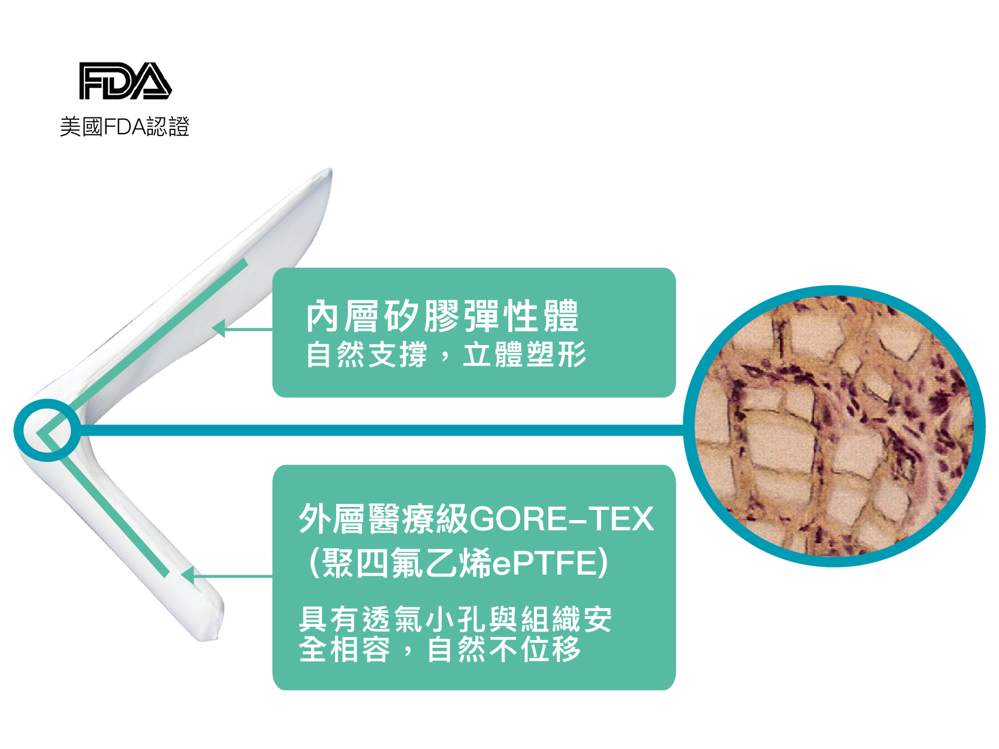
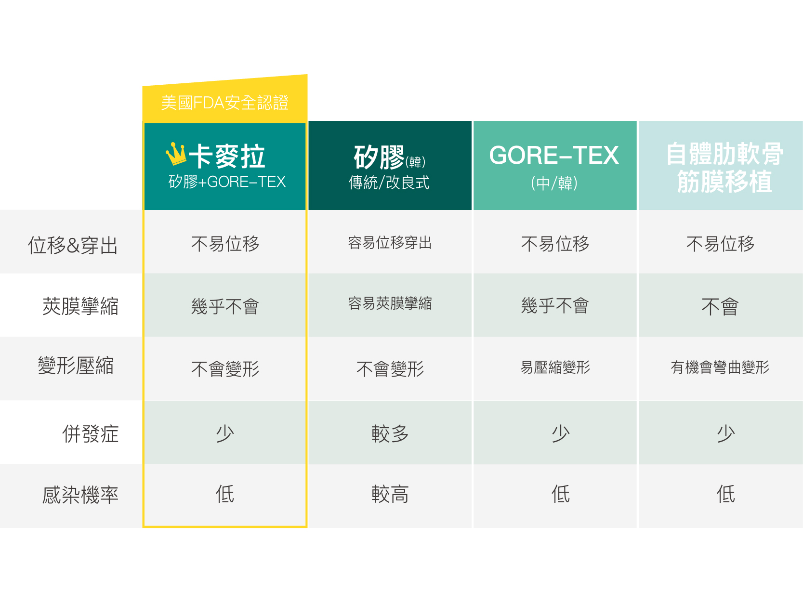
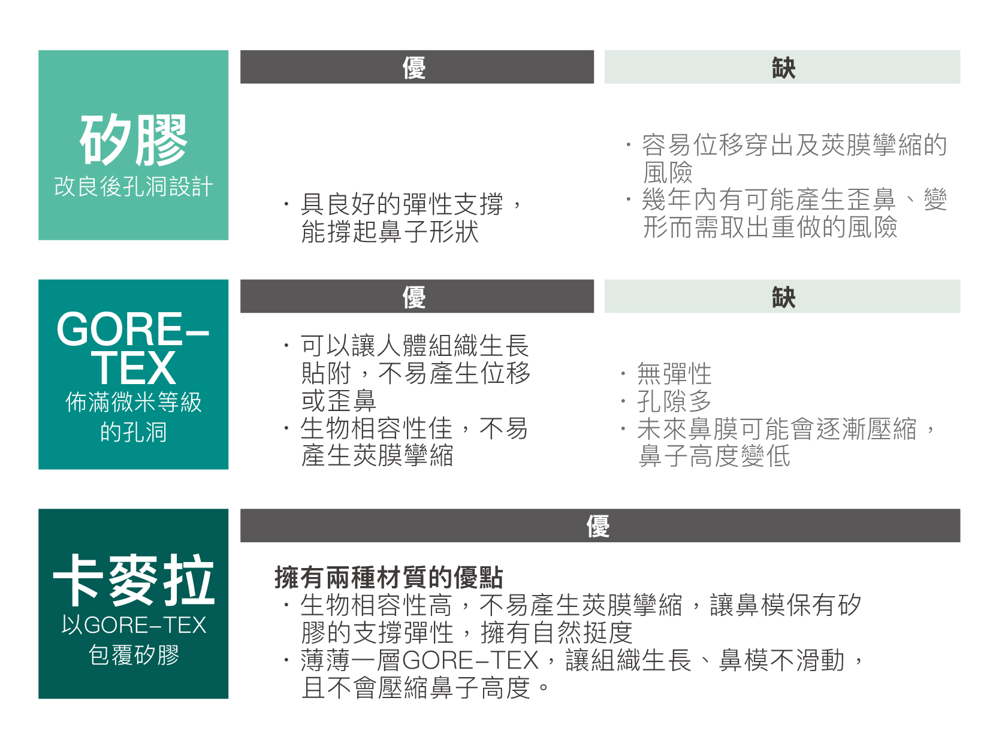

CHIMERA 卡麥拉鼻膜
見證
什麼是卡麥拉
Q&A
報導
活動
聯絡我們
美麗見證
什麼是卡麥拉
５大特點打造自然美鼻
堅定不位移
安全低風險
柔軟觸感佳
手術感染低
相容不排斥
卡麥拉材質簡介
卡麥拉鼻膜由美國生產製造，通過最嚴格的美國 FDA 安全認證，相較於其他韓國或中國品牌，安全更有保障。

內層矽膠彈性體
自然支撐，立體塑形
外層醫療級GORE-TEX (聚四氟乙烯ePTFE)
具有透氣小孔與組織安全相容，自然不位移
卡麥拉比較表

美鼻Q&A

隆鼻術後護理重點
術前及術後請戒煙，有助傷口復原速度
冰敷一周並避免趴睡、碰撞
按時回診遵循醫師指示，確認隆鼻術後效果
媒體報導
活動紀實
美人還有疑問？
Facebook 私訊
@bwk8213k